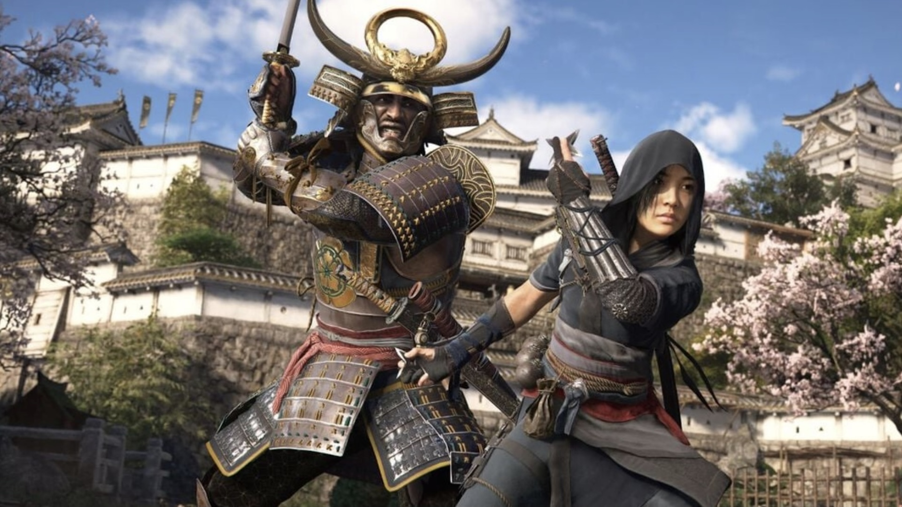
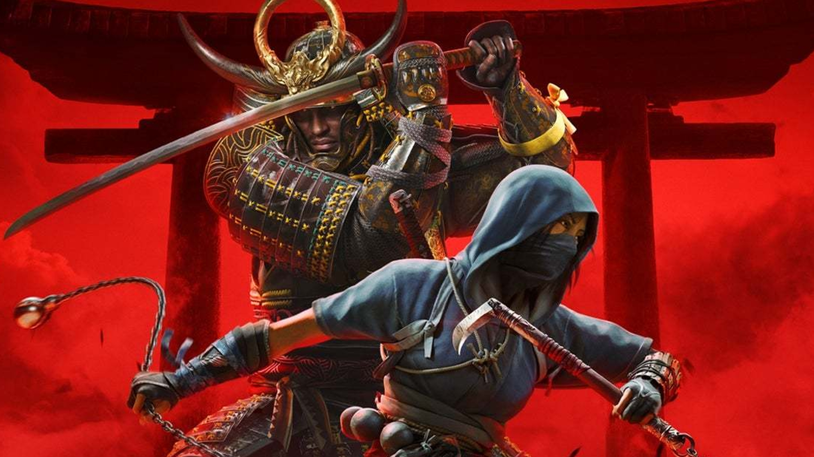

Assassin's Creed Shadows
nous emmène au Japon féodal en 1579, à la fin de la période Sengoku caractérisée par des conflits internes entre quelque 200 territoires dotés de dirigeants autonomes et par l'influence croissante des puissances occidentales.

Quelle est l'histoire d'Assassins Creed Shadows ?
L'aventure Assassin's Creed Shadows se déroulera dans un Japon féodal, et plus précisément pendant la période Azuchi-Momoyama entre 1579 et le début des années 1580. C'est une période très importante de l'Histoire du Japon, marquée par des affrontements terribles entre les différents clans, jusqu'à l'unification.